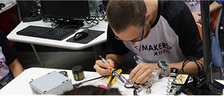

Hey Makers!! Let's Go!!!
O MOVIMENTO MAKER SURGIU DO TERMO “DIY” (DO IT YOURSELF), O FAÇA VOCÊ MESMO. ELE ACONTECE TODOS OS DIAS DENTRO DAS SALAS DE AULAS, NAS GARAGENS DE CASAS, LABORATÓRIOS E GRANDES EMPRESAS.
O objetivo principal é a capacitação do participante para criar soluções, através de suas inteligências múltiplas, para os problemas que encontramos na rotina da comunidade.
Sendo assim, todas as aulas são planejadas com o foco não em máquinas, mas nos participantes, capacitando eles para ter autonomia de criar seus próprios projetos.